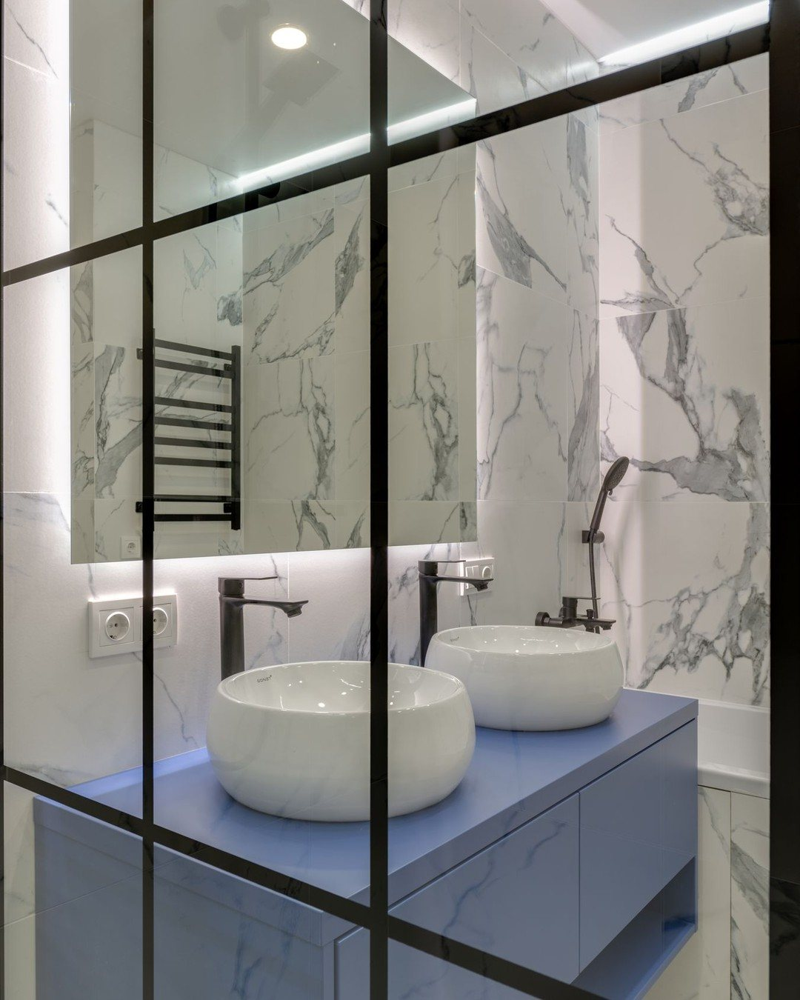
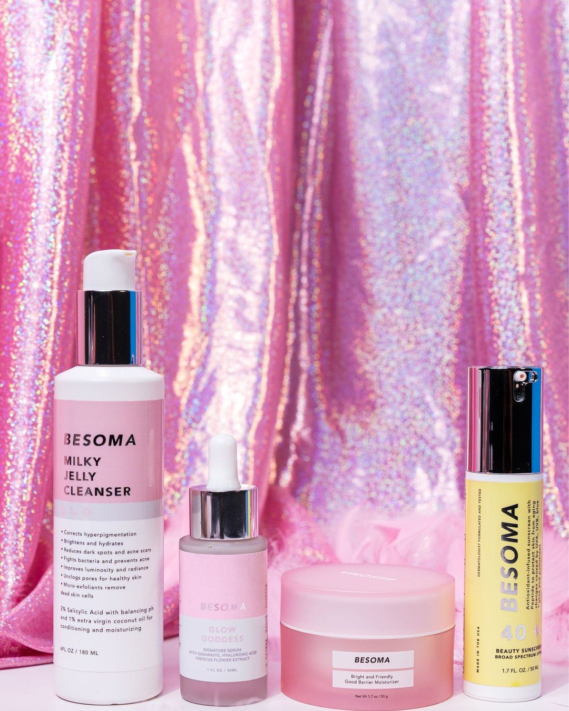
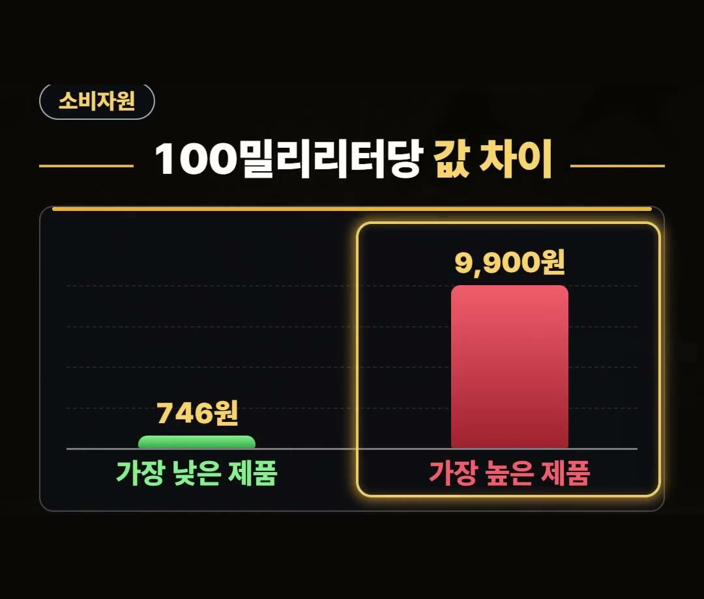

바디워시 추천, 100밀리리터당 값부터 봐야 하는 이유
※ 이 글에는 제휴 링크가 포함되어 있으며, 링크를 통해 구매하시면 일정 수수료를 받을 수 있습니다. (가격은 같습니다)
※ 이 포스팅은 쿠팡 파트너스 활동의 일환으로, 이에 따른 일정액의 수수료를 제공받습니다.
※ 이 콘텐츠는 토스쇼핑 쉐어링크 활동의 일환으로, 링크를 통한 구매가 발생하면 일정 수수료를 지급받습니다.

바디워시를 고를 때는 통 크기나 단순 판매 가격만 볼 것이 아니라 100밀리리터당 값을 먼저 확인해야 합리적으로 선택할 수 있으며 상세한 시험 기준과 확인 사항은 아래에서 하나씩 정리해 드립니다.
2025년 한국소비자원 비교공감 「바디워시」 10개 제품 시험 결과를 보면 4월 구매가 기준 100밀리리터당 746원에서 9,900원으로 최대 13.3배 차이가 났어요.
장바구니에 담기 전에는 용량, 100밀리리터당 값, 성분 표시 3가지를 꼭 기억하세요! 💡

용량과 용기 형태가 제각각인 바디워시
시중에 나와 있는 바디워시 제품들을 살펴보면 용기의 크기도 다르고 용량 표시 방법도 제각각인 경우가 많습니다.
겉으로 보이는 통 크기나 표면에 적힌 가격만 보고 비교하면 어느 제품이 더 경제적인지 헷갈리기 쉽습니다.
따라서 바디워시 추천 상품을 알아볼 때에는 표시된 금액 그대로 비교하기보다 동일한 용량 기준으로 환산해서 견주어 보는 과정이 필요합니다.

2025년 한국소비자원 시험 결과와 값 차이
한국소비자원 비교공감 제2025-17호 「바디워시」(2025-10-14 게시) 자료에 따르면 2025년 10개 제품을 대상으로 시험을 진행했습니다.
2025년 4월 구매가를 기준으로 계산했을 때 100밀리리터당 가격 차이는 다음과 같이 집계되었습니다.
- 100밀리리터당 최소 가격: 746원
- 100밀리리터당 최대 가격: 9,900원
- 100밀리리터당 값 차이: 최대 13.3배
같은 양을 기준으로 비교했을 때 가격 차이가 최대 13.3배까지 나는 것으로 확인되었습니다.
세정력 시험 결과 확인하기
가격 차이가 크게 난다고 해서 세정 성능도 그만큼 차이가 나는 것은 아닙니다.
소비자원의 인공 피지 및 미세먼지 세정력 시험 결과는 다음과 같습니다.
- 인공 피지 세정력: 10개 제품 전부 우수
- 미세먼지 세정력: 6개 제품 우수, 4개 제품 양호
인공 피지를 씻어 내는 세정력은 시험 대상 10개 제품이 모두 우수 평가를 받았으며, 미세먼지 세정력은 6개 제품이 우수, 4개 제품이 양호 평가를 받았습니다.
세정 성능과 가격을 별도로 비교해 보는 것이 실속 있는 선택에 도움을 줄 수 있어 바디워시 추천 정보를 찾을 때 함께 참고하기 좋습니다.

장바구니에 담기 전 확인할 3가지
바디워시를 구매하기 전에는 세 가지 요소를 미리 확인해 보는 요령이 있습니다.
- 용량 확인
- 100밀리리터당 값 확인
- 뒷면 성분 표시 확인
제품 표면에 적힌 단위당 가격을 확인하고 뒷면 성분 표시까지 꼼꼼하게 읽어보는 것이 좋습니다.
성분 표시 확인이 필요한 이유
뒷면 성분 표시를 확인해야 하는 이유는 표시 누락 사례가 있었기 때문입니다.
소비자원 시험 대상 10개 제품 중 1개 제품은 알레르기 유발성분 표시를 빠뜨려 개선 권고를 받은 것으로 조사되었습니다.
한편 상품 설명에 따르면 피치블라썸 향 1리터 대용량 제품이 2개 묶음으로 구성된 형태도 있습니다.
올바른 성분 표시 여부와 대용량 구성을 함께 확인하면 바디워시 추천 제품을 고를 때 더욱 유용합니다.
정리
- 2025년 소비자원 시험 결과 4월 구매가 기준 100밀리리터당 746원에서 9,900원으로 최대 13.3배 값 차이가 있었습니다.
- 인공 피지 세정력은 10개 제품 전부 우수였으며, 미세먼지 세정력은 6개 우수, 4개 양호였습니다.
- 구매 전 용량, 100밀리리터당 값, 뒷면 성분 표시 3가지를 확인하는 것이 좋습니다.
제품 링크는 아래에 모아 두었어요.
📌 2026년 10월 기준 정보예요. 가격은 시기에 따라 달라질 수 있어요.
· 한국소비자원 비교공감 제2025-17호 「바디워시」(2025-10-14 게시)
사진·영상영상 화면: Pexels (Angela Roma, Edward Jenner, MART PRODUCTION, Mikhail Nilov, Monstera Production, Timur Weber)
사진: Pexels (Andrea Sant, Max Vakhtbovych, Moni Rathnak, Tara Winstead)